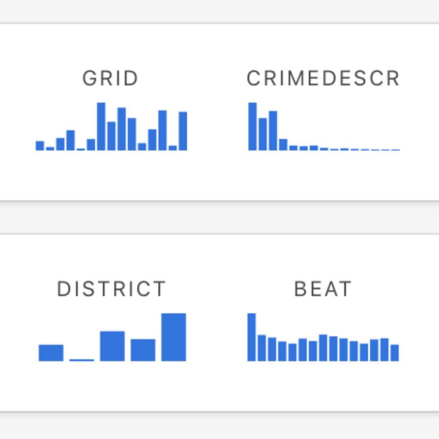
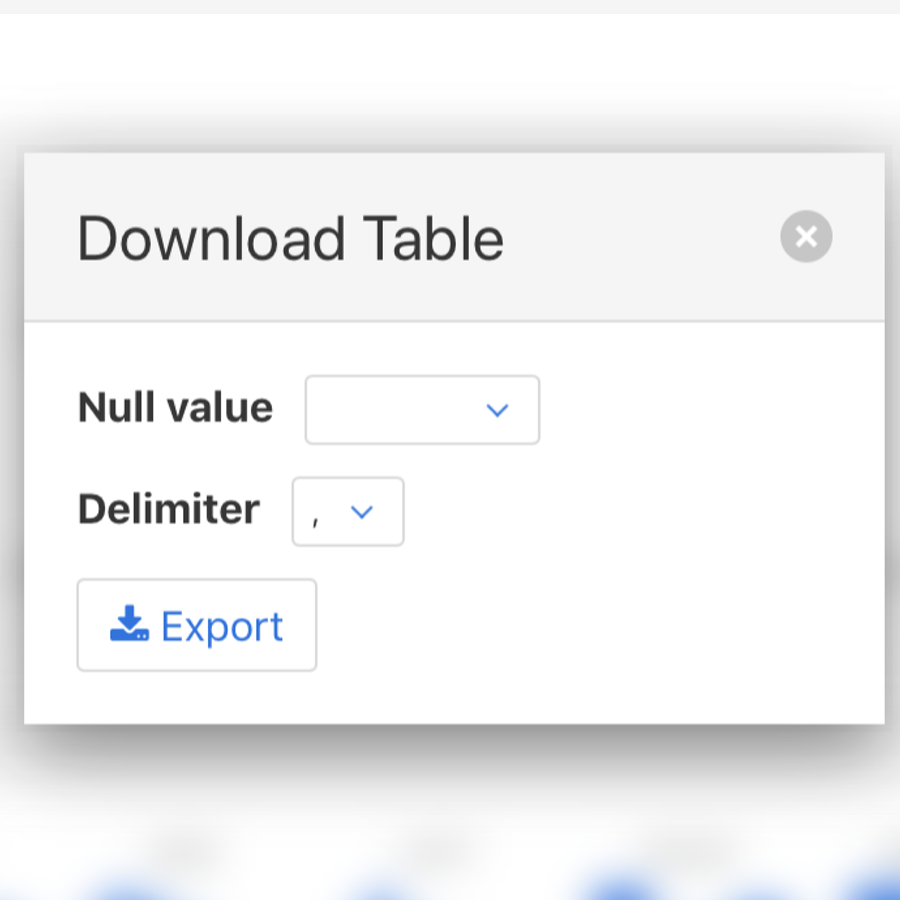
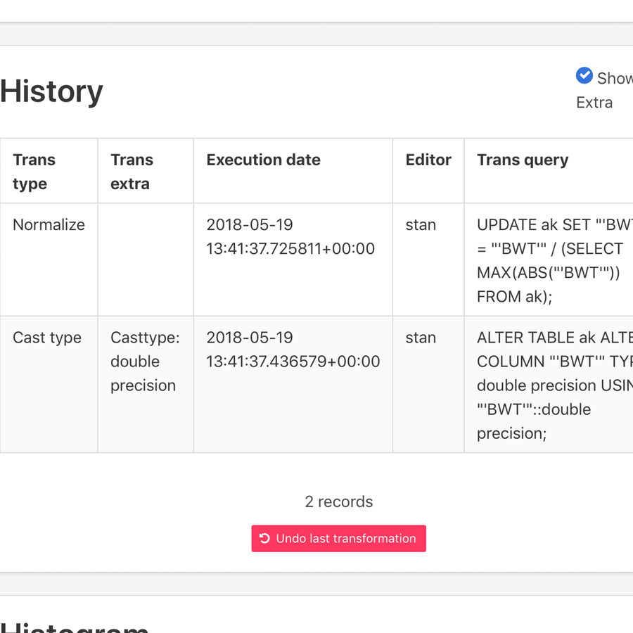
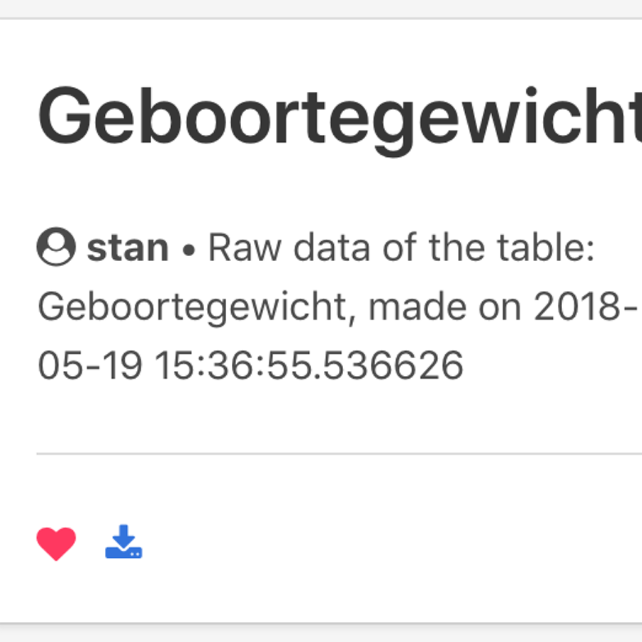
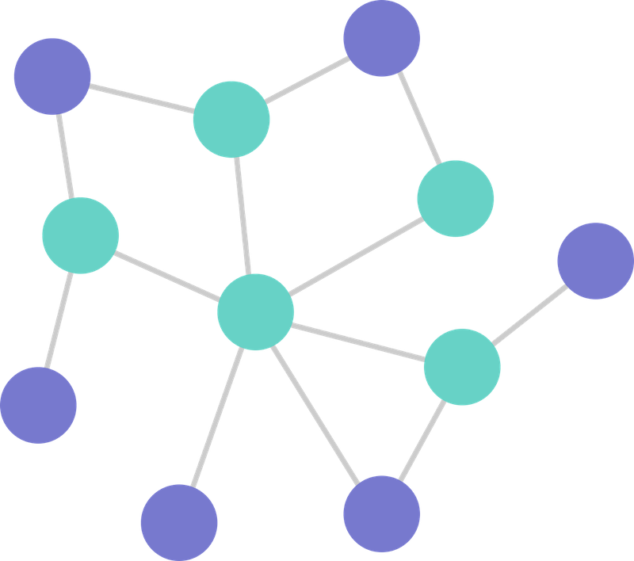

DataWr
A Online, Modern, Easy to Use Data Wrangler
Backend
Django Driven REST API

Backend
REST API
-
Django
Robust Python Web Framework -
Pandas
Powerful Datatool -
PostgresQL
Open-Source SQL Database
Working Tests
Frontend
Full JavaScript Web App
-
Vue
Simple, fast JS Framework -
Webpack
Powerful JavaScript transpiler -
Bulma
Simple & Clean CSS Framework
Responsive webapp
Transform your dataset on-the-go. Wherever you are.
Extra functionality
-
Undo tranformations
Revert every transformation you've made -
Notification system
Get the status of transformations, amount of rows affected, failures,... -
Universal histograms
Get an instant look on the contents of a column -
KNN algorithm
We've added some machine learning to our project -
Various bug-fixes and improvements
We've added an extended history panel, favourites filter, backend search,...
extra functionality
Revert transformations
extra functionality
Frontend improvements
-
 Column Charts
-
 Download popups
-
 Extended history
-
 adapt permissions
extra functionality
KNN Algorithm

•
•
•
K Nearest Neighbours
Classifier Algorithm
• Get Neighbours
• Distance function
• Majority Vote
Thank you for your attention